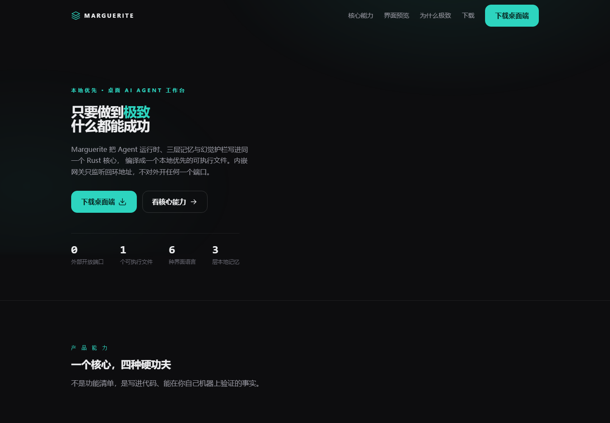
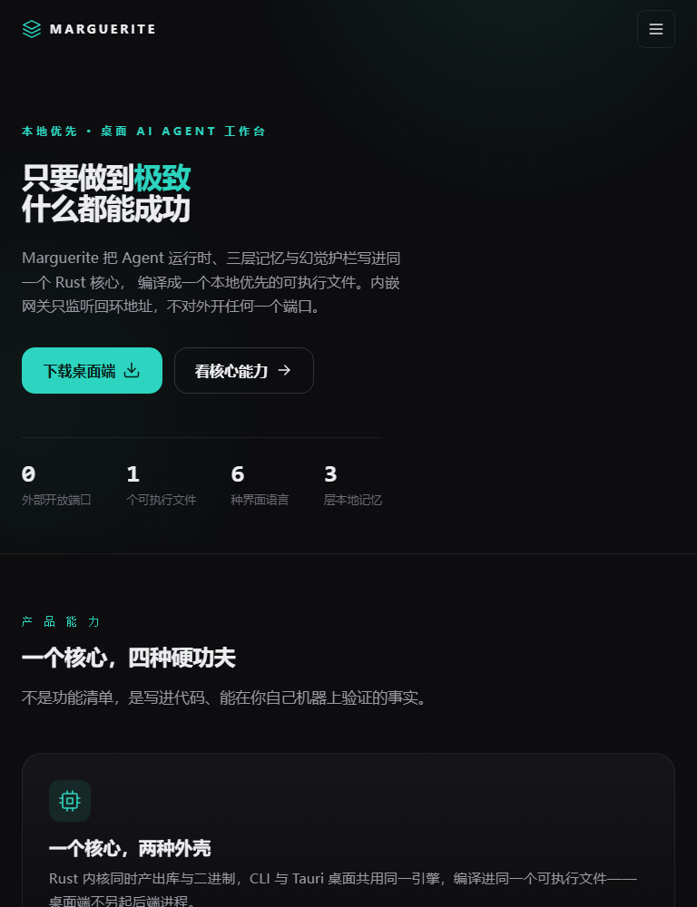
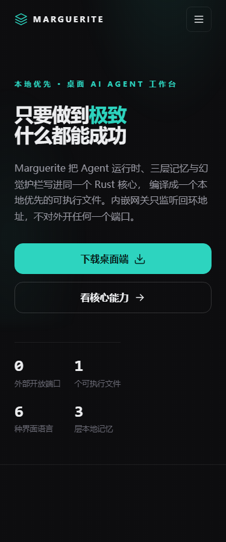

一个核心，两种外壳
Rust 内核同时产出库与二进制，CLI 与 Tauri 桌面共用同一引擎，编译进同一个可执行文件——桌面端不另起后端进程。
产 品 能 力
不是功能清单，是写进代码、能在你自己机器上验证的事实。
Rust 内核同时产出库与二进制，CLI 与 Tauri 桌面共用同一引擎，编译进同一个可执行文件——桌面端不另起后端进程。
内嵌网关默认只监听 127.0.0.1:18790 回环地址，不监听 0.0.0.0。局域网内其他机器扫不到，你的代码不为了「检索」离开这台机器。
感知、短期、长期三层记忆。长期记忆用本地特征哈希向量化做余弦相似度检索，不依赖任何外部 embedding 服务。
语法、语义、事实、契约四道闸依次过闸。不过闸就进修复循环：规则修复最多两次，仍不过再交给模型，改完重新过一遍护栏。
界 面 预 览
桌面、平板、手机，同样的克制与景深——在任意屏幕上都站得住。



为 什 么 极 致
提交前必须全绿的门禁，每一条都对应一句能在本机跑的命令。
cargo buildcargo testcargo clippy不含 LLM 推理